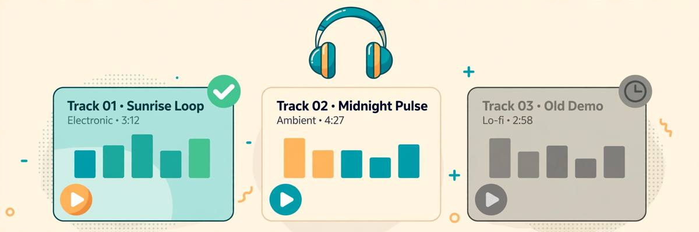

I Tested 6 AI Music Generators With No Account — 3 Are Actually Good (2026)
AI music is where the no-signup story gets interesting. Unlike video — where I checked 8 tools and zero passed — music generation has real tools that render full songs without an account. I ran the same prompt through 6 of them, created zero accounts, and scored the full pipeline: type a description, generate, listen, download. Three passed. Three didn't.
Music has its own failure modes, distinct from every category I've tested. A chatbot either answers or it doesn't. But a music generator can technically work and still be useless: 15-second clips when you need a full song, instrumentals when you asked for vocals, or a "download" button that reveals the account wall at the last step. So this test had two hard requirements, not one: no account at any step, and a finished track you can actually keep.
How I tested
Same prompt on every tool, designed to test range:
- The prompt: "Lo-fi hip hop, rainy day mood, soft piano with vinyl crackle, 90 BPM, chill study background music" — a genre with clear conventions, so I could judge whether the output sounded like the genre or like elevator noise.
- Scored on: no account wall at any step (pass/fail), vocals vs. instrumental, track length, download without login, and whether the result was actually listenable.
- Method: fresh browser session, no logins anywhere. If generation or download demanded an email, that's a fail — even if the preview played fine.
The 3 that are actually good
1. SongGenerator.io — the full-song pick
SongGenerator.io is the closest thing to "type a vibe, get a song" without an account. Vocals plus lyrics, full 2–3 minute tracks, and daily free generations with no registration. The lo-fi prompt came back as an actual structured track — intro, groove, outro — not a 20-second loop pretending to be music. Vocal quality won't fool anyone into thinking it's a human singer, but for demos, content background, and "what would this sound like" experiments, it's genuinely usable.
What earned it the top spot: the daily limit resets, the tracks are full-length, and the entire pipeline — prompt, generate, listen, download — never asked who I was. If you need one bookmark for no-signup AI music, start here.
2. ACE-Step (via aisongmaker.io) — the longest tracks
ACE-Step, built on Meta's open model, produces clips up to 4 minutes — the longest free no-signup generations I found. The vocals sounded more natural than SongGenerator.io's on the test prompt, with better phrasing on the melodic lines. The trade-off is a plainer interface and slightly slower generation, but when the track is playing, none of that matters.
This is the pick for "I need one good longer piece" rather than volume. Four minutes of AI music with no account is, frankly, remarkable — this category didn't exist two years ago.
3. AIMusicGen.ai — the instrumental specialist
AIMusicGen.ai does one thing: instrumentals, powered by Meta's MusicGen model. No vocals, 15–30 second clips, session-based limits. That sounds thin next to the two winners — until you need background music for a video, podcast, or presentation. For that job, short genre-accurate instrumentals are exactly right, and the quality on genre-specific prompts was consistently professional. The lo-fi test sounded like actual lo-fi, vinyl crackle and all.
Pair it with a no-signup voice generator for narration and you've got a full audio pipeline without a single account. That's the real power move this category enables.
Quick comparison
| Tool | Best for | Vocals? | Track length | Download w/o account? |
|---|---|---|---|---|
| SongGenerator.io | Full songs | Yes | 2–3 min | Yes |
| ACE-Step | Longest tracks | Yes | Up to 4 min | Yes |
| AIMusicGen.ai | Background instrumentals | No | 15–30 sec | Yes |
| MusicHero.ai | — | Yes | Full song | Yes, but 3-track cap |
| Magic Hour | — | Optional | 30 sec | Yes, but 3/day |
| Remusic.ai | — | Yes | 30–60 sec | Yes |

The 3 that didn't make it
MusicHero.ai — 3 tracks and you're done
MusicHero.ai has arguably better vocal quality than SongGenerator.io on slow, melodic tracks — and a hard cap of 3 tracks on the no-signup tier, with no daily reset. Three songs, ever, then the wall. That's not a free tier; it's an extended demo. Lovely for "try it once," useless as a tool you return to. The same squeeze pattern as the chatbots: functional, ungenerous, designed to convert.
Magic Hour — 30 seconds, 3 times a day
Magic Hour appears in my voice generator test too, and the story rhymes: good quality, tiny ration. Three 30-second tracks per day with no account. For music specifically, 30 seconds is below the threshold of usefulness — it's a ringtone, not a track. Fine for testing a vibe; not a workflow.
Remusic.ai — good, but too short
Remusic.ai does vocals and instrumentals with no account, and the quality is decent. The problem is purely length: 30–60 second clips. In a category where two winners give you 2–4 minute tracks for free, a one-minute cap is a fail on practical grounds. It works; it just doesn't compete.
The real distinction: vocals vs. instrumental
Here's the buying guide the landing pages won't give you. No-signup music tools split into two species, and you should decide which animal you need before clicking anything:
Vocal songs (SongGenerator.io, ACE-Step): full tracks with AI singing. Better for demos, gifts, creative experiments — anything where "a song" is the deliverable. Vocal quality is the weak point across the board; expect charmingly artificial, not human.
Instrumentals (AIMusicGen.ai): background music, no singing. Better for video soundtracks, podcasts, presentations — anywhere the music sits under something else. Quality here is genuinely professional on genre prompts, because there's no vocal uncanny valley to fall into.
Pick wrong and even a good tool disappoints. Pick right and the free tier feels generous.
One more practical note: download immediately. Session-based free tiers (AIMusicGen.ai especially) don't keep a library for anonymous users — close the tab and your track is gone. The winners let you download without an account, so make that the last step of every session, not an afterthought.
FAQ
Is there a completely free AI music generator with no sign up and no limits?
No. Every tool rations something: track length, daily generations, or total tracks. The honest question is whether the ration fits your use. SongGenerator.io's daily reset and ACE-Step's 4-minute tracks are the most workable free tiers I found.
Can I use AI-generated music commercially?
Usually not on the free anonymous tier — most providers reserve commercial rights for paid plans, and some free tracks may even appear in public showcases. For monetized videos or ads, read the terms or pay for the tier that grants the license. Don't learn this from a copyright strike.
Which is best for YouTube background music?
AIMusicGen.ai — short, genre-accurate instrumentals are exactly what background music needs, and there's no vocal weirdness to distract viewers. Generate a handful of variants, pick the best, loop it under your content.
How good are the AI vocals, honestly?
Charmingly artificial. Fine for demos and fun, not for anything where the vocal carries emotional weight. The technology improves fast — ACE-Step's phrasing is noticeably better than last year's models — but "fool a listener" isn't here yet on free tiers.
Do I need musical knowledge to use these?
No — that's the point. Describe the vibe in plain words ("rainy lo-fi hip hop, 90 BPM") and the tool handles composition. Knowing genre names helps; knowing music theory doesn't matter.
Why do some tools limit to 30 seconds?
Compute cost scales with length, and 30 seconds is the cheapest demo that still sounds like music. It's also a deliberate funnel: long enough to impress, short enough that real use requires upgrading. The winners above are the exceptions that give you minutes, not seconds.
Can I combine AI music with AI voiceover?
Yes, and it's the best no-signup audio workflow available: generate background music on AIMusicGen.ai, generate narration on a no-signup voice tool, mix them in any free editor. Two anonymous pipelines, one finished piece — no accounts anywhere in the chain.
The takeaway
Music is the rare category where no-signup is genuinely healthy: SongGenerator.io for full vocal songs, ACE-Step for the longest tracks, AIMusicGen.ai for background instrumentals — all three go from prompt to downloadable track with zero identity. The failures lost on rationing (MusicHero's 3-track lifetime cap, Magic Hour's 3-a-day), not on walls.
Same deal as always: providers change policies, so we re-verify. The maintained list lives in our directory — and if a listed tool adds a signup wall, tell us. If you searched "free ai music generator no sign up," these three are the ones that mean it.
Tested 2026-10-11 · Providers change their signup policies — we re-verify regularly.